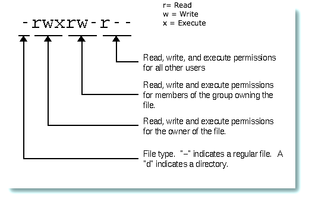

What is file permission ?
Permission of the owner to give group and other user the access to the file and directory to read and modify it.Rights can be assigned to read a file, to write a file, and to execute a file (i.e., run the file as a program).
ALL the files and directory in unix system will have the similar structure as shown below.
sh-3.2# ls -l total 24 -rw-r--r-- 2 root staff 12 Dec 20 16:32 file1 drwxr--r-- 2 root staff 12 Dec 20 16:32 directory
Diagram

Lets dive in details on the structure
r = read
w = write
x = execute
u = user
g = group
o = other
First rwx is for user
Second rwx is for group
Third rwx is for other
Understanding the fields
-rw-r--r-- 2 root staff 12 Dec 20 16:32 file1 1) It is a file hifen(-) at the beginnig indicates file and d indicates directory. 2) User has read and write permission,and no execute permission 3) Group hasread only permission. 4) Lastly, other has read permission only. No write and execute Permission 5) Owner of the file is root. 6) It belongs to staff group 7) File was created on 20th december at 16:32
Understanding the Numbers
r = 4, w = 2,x = 1
rwx = 4+2+1 = 7
rw- = 4+2+0 = 6
r-- = 4+0+0 = 4
r-x = 4+0+2 = 5
... and so on
Value and meanings of Numbers
rwxrwxrwx = 777 Read, write and execute for all
rwxr-xr-x = 755 Nowrite permission for group & other
rwx------ = 700 Nothing for group and other
rw-rw-rw- = 666
rw-r--r-- = 644
rw------- = 600
... and so on
chmod
chmod 777 filename
it will give the read,write and execute permissions to everyone
chmod 700 filename == chmod u+rwx filename
chmod 770 filename == chmod ug+rwx filename
chmod 777 filename == chmod ugo+rwx filename
chmod 651 filename == chmod u+rw,g+rx,o+x filename
Revoking the permission back
chmod u-r fname take reading permission away chmod g-rwx fname rake read,write and ececute away chmod u-w,g-w,o-w and so on ....
Changing file ownership
You can change the owner of the file and directory using the command chown.In below example root owns the data file, and we have changed the owner to test. User test was already created.
[root@ip-172-31-31-37 tmp]# ls -l
total 0
rw-r--r--. 1 root root 0 Dec 22 00:08 data-
root@ip-172-32-32-32 tmp]# chown test data]
root@ip-172-32-32-32 tmp]# ls -l]
total 0
rw-r--r--. 1 test root 0 Dec 22 00:08 data-
root@ip-172-32-32-32 tmp]
Changing group ownership
Similarly you can change the group of the file and directory using the command chgrp.In below example root is the group which gets changed to the testgroup.
[root@ip-172-32-32-32 tmp]# ls -l
total 0
rw-r--r--. 1 root root 0 Dec 22 00:45 data-
root@ip-172-32-32-32 tmp]# chgrp testgroup data]
root@ip-172-32-32-32 tmp]# ls -l]
total 0
rw-r--r--. 1 root testgroup 0 Dec 22 00:45 data
#root@ip-172-31-31-37 tmp]
Changing directory ownership and group recursively
All the files and folder inside certain directory will get to the specified owner and group. if you dont want to perfom recursively, just remove -R from chown command
root@ip-172-32-32-32 tmp]# ls -l]
total 0
rw-r--r--. 1 root root 0 Dec 22 00:08 data-
root@ip-172-32-32-32 tmp]# chown -R test:testdata data]
root@ip-172-32-32-32 tmp]# ls -l]
total 0
rw-r--r--. 1 test testdata 0 Dec 22 00:08 data-
root@ip-172-32-32-32 tmp]
Users Administration
useradd – Adds a new user account on the local system Lets create newuser named tomuser. id command can be used to check the existing user eg:
root@ip-172-32-32-32 ec2-user]# useradd tomuser root@ip-172-32-32-32 ec2-user]# id tomuser uid=502(tomuser) gid=503(tomuser) groups=503(tomuser) root@ip-172-32-32-32 ec2-user# root@ip-172-32-32-32 ec2-user]# useradd -u 100 -g other -d /export/home/newuser1 -m -s / bin/bash -c "Regular User Account" newuser1 creating user with user id 100, group name other, setting the home directory for new user,Using the bash shell, Putting the comment and lastly giving the name of the new user newuser1When you create the new user account and set the password, it gets save in /etc/passwd
vi /etc/passwd tomuser:x:502:503::/home/tomuser:/bin/bash
Modifying and deleting the user
useradd - Adds a new user account on the system
usermod – Modifies a user’s account on the system
userdel – Deletes a user’s account from the system
:eg
# usermod -c "i am tomuser" tomuser
# vi /etc/passwd | grep tomuser tomuser:x:502:503:i am tomuser:/home/tomuser:/bin/bash
Similarly, we can change userid, groupid, homedirectory usermod -d /tmp/tomuser/ tomuser.
# vi /etc/passwd | grep tomuser tomuser:x:502:503:i am tomuser:/tmp/tomuser:/bin/bash Lastly deleteing the user,
root@ip-172-32-32-33 ec2-user]# userdel tomuser] root@ip-172-32-32-32 ec2-user]# id tomuser] id: tomuser: No such user
if you go into /home/ directory, you will still see the directory for tomuser. To remove user with there home directory, use userdel -r
root@ip-172-32-32-33 ec2-user]# userdel -r tomuser]
root@ip-172-32-32-32 ec2-user]# id tomuser]
id: tomuser: No such user
root@ip-172-32-32-32 ec2-user]# cd /home/ ; ls]
Creating, modifying and deleting the group
groupadd – Adds a new group entry to the system groupmod – Modifies a group entry on the system groupdel – Deletes a group entry from the system :eg
[root@ip-172-32-32-32 ec2-user]# useradd mathgroup [root@ip-172-32-32-32 ec2-user]# cat /etc/group | grep mathgroup mathgroup:x:503: [ root@ip-172-32-32-32 ec2-user]#
This are the field of group
groupname:group-password:GID:username-list
eg:
historygroup:x:2003:tomuser,bobuser
You can specify group id while creating the group
[root@ip-172-32-32-32 ec2-user]# groupadd -g 1002 sciencegroup [root@ip-172-32-32-32 ec2-user]# cat /etc/group | grep science sciencegroup:x:1002: [ root@ip-172-32-32-32 ec2-user]#
Changing the group id
[root@ip-172-32-32-32 ec2-user]# groupmod -g 2003 sciencegroup [root@ip-172-32-32-32 ec2-user]# cat /etc/group | grep sciencegroup sciencegroup:x:2003:
Changing the name of the group
[root@ip-172-32-32-32 ec2-user]# groupmod -n sciencegroup englishgroup [root@ip-172-32-32-32 ec2-user]# cat /etc/group | grep englishgroup englishgroup:x:2003:
Giving the non unique values, which is done using -o with -g
[root@ip-172-32-32-32 ec2-user]# groupmod -g 2003 -o histroygroup historygroup:x:2003:
Deleteing the Group
[root@ip-172-32-32-32 ec2-user]# groupdel histroygroup
su (supper user)
it is used to change the user account.You are logged into as someuser and wants to sqitch to different user or get the access to root user.
root@ip-172-31-31-37 home]# su tomuser]
tomuser@ip-172-31-31-37 home]$ su root]
Password:
#[root@ip-172-31-31-37 home]
root user doesnt require password to get into others user accounts.However, user beside root requires password to get into the accounts that doesnt belong to the owner.
sudo
Not everyuser has permission to perform all the action on the servers.And, its not secure to share the root password to every user as well. Thus, sudo come in action. With the help of sudo, you can run the single command with root privileges. it doesnt switch to the root user or require a seperate root user passowrd, however su doesnt require root password.
Main difference between sudo and su is that sudo sudo uses "your password" to authenticate, whereas su uses "Their password", the account you are switching to. Also, when you do sudo, it is noted down into the log files as well.
lets have some example
[tomuser@ip-172-32-32-32 home]$ sudo yum install httpdi [sudo] password for tomuser: tomuser is not in the sudoers file. This incident will be reported.
I tried to install the httpd application with the sudo permission, but it denied me, reason my username hasn't been added in the /etc/sudoers file. In order for one to have the sudo access, there username has to present in the sudoers file. AS a root user, you can open it as visudo
The incident is reported in the log file. vi /var/log/secure
Lets solve the problem. Add the entry at the very bottom of the file.
vi /etc/sudoers ## Read drop-in files from /etc/sudoers.d (the # here does not mean a comment) #includedir /etc/sudoers.d cloud-user ALL=(ALL) NOPASSWD: ALL ec2-user ALL=(ALL) NOPASSWD: ALL
vi /etc/sudoers ## Read drop-in files from /etc/sudoers.d (the # here does not mean a comment) #includedir /etc/sudoers.d cloud-user ALL=(ALL) NOPASSWD: ALL ec2-user ALL=(ALL) NOPASSWD: ALL tomuser ALL=(ALL) NOPASSWD: ALL
Setting up the root password and Various options
Setting up the password for accounts
[ec2-user@ip-172-32-32-32 ~]$ sudo su - [root@ip-172-32-32-32 ~]# passwd root Changing password for user root. New password: Retype new password: passwd: all authentication tokens updated successfully. [root@ip-172-32-32-32 ~]#
You have to either be root or use sudo to create an account and set the password
chage command
All the option gets saved in the /etc/shadows file
{userName}:{password}:{lastpasswdchanged}:{Minimum_days}:{Maximum_days}:{Warn}:{Inactive}:{Expire}:
[root@ip-172-32-32-32 ~]# chage -l bobuser Last password change : Dec 23, 2015 Password expires : never Password inactive : never Account expires : never Minimum number of days between password change : 0 Maximum number of days between password change : 99999 Number of days of warning before password expires : 7
Minimum days to wait inorder to change the password chage -n date username
Set the expiration date of the account chage -E date username
[root@ip-172-32-32-32 ~]# chage -E 12/25/2015 bobuser Account expires : 12/25/2015
Set the minimum wait date before you can change the passowrd chage -m date username
[root@ip-172-32-32-32 ~]# chage -m 5 bobuser Minimum number of days between password chage : 5
Set the date for password to be expired chage -M date username
[root@ip-172-32-32-32 ~]# chage -M 10 bobuser Maximum number od days between password change : 10
Warning before the password expires chage -W days username
[root@ip-172-32-32-32 ~]# chage -W 10 bobuser Number od days of warning before password expires: 10
Set the date for password to be expiredchage -d date/days username
[root@ip-172-32-32-32 ~]# chage -d 10 bobuser password expires : 12/10/2015
Forced the password to get change on next login chage -d 0 username
[root@ip-172-32-32-32 ~]# chage -d 0 bobuser Las password change : Password have to be changed
Locking and unlocking the account temporarily
[bobuser@ip-172-31-31-37 root]$ sudo passwd -l bobuser Locking password for user bobuser. passwd: Success [bobuser@ip-172-31-31-37 root]$ sudo passwd -u bobuser Unlocking password for user bobuser. passwd: Success [bobuser@ip-172-31-31-37 root]$
Generating the key
Generte the key in your local machine, and place it on the server. This will solve the hassle of entering the password to login to the server everytime.
[root@localhost] home]# su tomuser [tomuser@localhost home]$ ssh-keygen Generating public/private rsa key pair. Enter file in which to save the key (/home/tomuser/.ssh/id_rsa): Created directory '/home/tomuser/.ssh'. Enter passphrase (empty for no passphrase): Enter same passphrase again: Your identification has been saved in /home/tomuser/.ssh/id_rsa. Your public key has been saved in /home/tomuser/.ssh/id_rsa.pub. The key fingerprint is: 30:11:5d:fe:12:59:3b:bf:b0:21:a5:be:a8:0b:f1:c4 tomuser@localhost
The key's randomart image is: +--[ RSA 2048]----+ | oo .. . | | ... o . | | o + + | | . o = o | | . E S + + . | | + . o + . | | . . . . . | | . . . | | oo. . | +-----------------+The generated key gets saved into the /home/tomuser/.ssh/id_rsa.pub
[tomuser@localhost home]$ cat /home/tomuser/.ssh/id_rsa.pub ssh-rsa AAAAB3NzaC1yc2EAAAABIwAAAQEAzoFUvjzCx3A/yCG+zbn4dSTufGSuR5NYBxzIC49/4llBIakzptMkqEi2E719lWm2WZOEo+XGWb ntS3AOWm28m+wc16zUl84kl6nqp/qTrHrXiqNpuZs9g0Q9nVm7E8939mJxLSNEbl6YejleCc0lQKZqVbAX0deXEZIaGkU1Y8arYhANQdOYMJ61+iV3cUtXaDmqZ5AVscMURZE82+9pLa6ltNISxf4qHsgZwS6vhQztNRkHbq5dbiTyyfD5nzD0+JuXiPG+XvcDbLuRSW6NT6B03AwPAeJYtGZrKpt99OmC4QRN0/T3NtiSAuvPFsCzLrDHeRyYZIDUHQv8Cgnw== tomuser@localhost
Once the key is generated in the localmachine, copy the key and login into the server 1) create an account bobuser 2) Get into the directory /home/bobuser/.ssh/, create one if its not there. 3) Open the text file named authorized_keys paste the copiedkey from your localmachine. 4)log out from the server and log back in ssh bobuser@ipaddressofsever, it should allow you to get in without asking to enter the password
[root@ip-172-32-32-32 home]# adduser bobuser [root@ip-172-32-32-32 home]# mkdir /home/bobuser/.ssh/ [root@ip-172-32-32-32 home]# vi /home/bobuser/.ssh/authorized_keys [root@ip-172-32-32-32 home]# cat /home/bobuser/.ssh/authorized_keys ssh-rsa AAAAB3NzaC1yc2EAAAABIwAAAQEAzoFUvjzCx3A/yCG+zbn4dSTufGSuR5NYBxzIC49/4llBIakzptMkqEi2E719lWm2WZOEo+XGWbR4ntS3AOWm28m+wc16zUl84kl6nqp/qTrHrXiqNpuZs9g0Q9nVm7E8939mJxLSNEbl6YejleCc0lQKZqVbAX0deXEZIaGkU1Y8arYhANQdOYMJ61+iV3cUtXaDmqZ5AVscMURZE82+9pLa6ltNISxf4qHsgZwS6vhQztNRkHbq5dbiTyyfD5nzD0+JuXiPG+XvcDbLuRSW6NT6B03AwPAeJYtGZrKpt99OmC4QRN0/T3NtiSAuvPFsCzLrDHeRyYZIDUHQv8Cgnw== localhost@localdomain